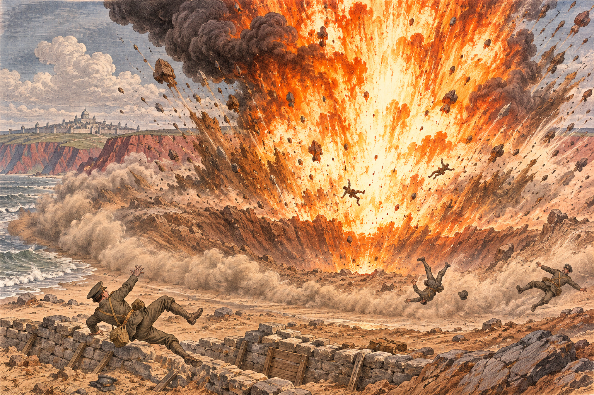

なのですの艦隊、紅峰の首都の足もとを砲撃
五発の艦砲弾が一万七千八百人を奪う
軍港の北の一部隊は全滅、首都の南でも二つの部隊が削られた 盟友を攻められた青海が蒼森と金野に宣戦し、同盟軍の反攻が動き出した

【総合部】なのです主義人民共和国の艦隊が第177期、紅峰公国の首都ローテンホルンの足もとを艦砲で叩いた。首都の南の沖合に並んだ戦艦二隻と巡洋艦一隻が放った砲弾は、五度にわたって紅峰の部隊に命中し、あわせて一万七千八百人の兵を奪った。軍港のすぐ北にいた一部隊は三発の直撃で八千九百人を失って全滅し、首都のすぐ南と南東に布陣した二つの部隊も、それぞれ四千四百人、四千五百人の損害を受けた。
公報に載る今期の紅峰の損害は四千百人にとどまる。これは陸の戦いで出た損害で、艦砲の分は入っていない。公報は反撃を伴わない砲撃を数えないからだ。艦砲が奪った一万七千八百人は、公報の数字の四倍を超える別の損害である。砲弾は兵だけでなく、首都脇の農場の規模を十五から十に削り、ミサイル基地にも命中した。紅峰の兵力は十万九百人から八万四千九百人へ、一万六千人減っている。
紅峰も手をこまねいてはいない。海兵が立つ沿岸の浅瀬へ対人ミサイルを撃ち込んで多数に傷を負わせ、徴兵と部隊の新設で穴を埋めた。軍港では養殖場を取り払って港の通路を空け、造船に踏み切っている。海からの砲撃に、海の戦力で応じようという動きである。詳報は3面。
青海、蒼森と金野に宣戦
戦火は沿岸にとどまらない。青海共和国が第177期、金野伯爵領に宣戦を布告した。前期に宣戦した蒼森辺境伯領（第181期開戦）に続く二つ目で、金野とは第182期に開戦する。蒼森は第175期、金野は第176期に、それぞれなのですへ宣戦した国である。同じ同盟軍の盟友を攻められた青海が、その二国に応じたとみられる。十一万の民をなのですへ送り出した海の国が、こんどは盟友のために矛を取る。国際面の詳報は2面。